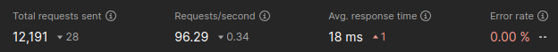

Accessing the request body in Play Framework Filters
A highly performant way to extract data from the raw request body and pass on information to subsequent Filters and Actions based on it. With an example of how to parse bearer tokens as per RFC 6750.

I am writing this blog post to publish some information that I was desperately looking for recently. There are questions about it on different forums, but nowhere did I find the answers that I was searching for.
I think the best information that I've found was this answer on Stack Overflow, together with the source code of Play's CsrfFilter. Fortunately, I have some knowledge about Scala and Akka Streams Pekko Streams, which helped me piece this together.
Why this might be helpful
In Play Framework, there are two distinct ways of intercepting requests, and they offer different features: Filters and Actions. From a user perspective, the key differences are:
- A Filter, when enabled in the config, captures every incoming request; an Action must be explicitly added to controllers or methods in the source code.
- A Filter receives a
RequestHeaderparameter without the parsed body; an Action receives aRequestparameter, which includes the request body.
So, what if you want to intercept every request and access the body? Or what if you aim to reject a request based on data at the beginning of its body, but before the whole thing is parsed?
My Use-Case
I wish to create a Play Filter that will check every incoming request for access tokens (i.e. bearer tokens) as defined by RFC 6750. When a token is present, it should be extracted and added to the request attributes as RAW_ACCESS_TOKEN, which may then be processed further by subsequent Filters. The culprit: As per Section 2.2, an access token may also be sent in the request body (instead of the Authorization header or via query parameters).
By figuring out how to access the raw request body within a filter, I can reject an incoming request before the entire body has been processed, and therefore prevent unnecessary computation. Think of a large file upload, where the access token is sent in the first form field inside the body. If I can already tell that the access token is missing or invalid before the whole upload is processed, I can prevent unnecessary load on the server. Why should I accept and parse a full file upload if I can already tell that it's unauthorized at the start?
Using an Action Creator
By creating a custom Action Creator, and configuring it to run before the Action Composition, you can easily create a Filter-like Action that will capture every incoming request, and you'll have access to the parsed request body.
// ActionCreator.java
import java.lang.reflect.Method;
import java.util.concurrent.CompletionStage;
import play.mvc.Action;
import play.mvc.Http;
import play.mvc.Result;
public class ActionCreator implements play.http.ActionCreator {
@Override
public Action createAction(Http.Request request, Method actionMethod) {
return new Action.Simple() {
@Override
public CompletionStage<Result> call(Http.Request req) {
// todo: do your thing with the request here
return delegate.call(req);
}
};
}
}
Set it as the default in the configuration, and explicitly enable it to execute before the action composition. This way attrs can be added to the request, which can later be processed by other Actions before it reaches the controller.
# application.conf
play.http.actionCreator = "org.example.MyActionCreator"
play.http.actionComposition.executeActionCreatorActionFirst = true
There are certain drawbacks to this method:
- While it runs before Actions, it will still run after Filters, meaning that you can't use it to tag requests (e.g., adding
request.attrs()) that may influence the behavior in Filters. And body-parsing has already happened, meaning that this may consume more resources. - There can be only one
ActionCreator; this could be a problem if you are implementing a library to be used in other Play Framework projects (e.g., an Auth-Library that parses access tokens from all incoming requests). By utilizing an Action Creator for this, you basically prevent the downstream project, or any other potential libraries, from doing the same.
So, what if we want to access the request body inside a Filter? This is actually possible. But for the solution to be performant, it can get complicated, and if you are not familiar with Scala and Akka Streams Pekko Streams, you may be downright lost. So let me give you a starting point.
Using a Play Filter
This is partially based on a Play Filter that you might be familiar with, because it is baked into every Play Framework: The CSRF Filter.
I figured that my use case is quite similar to that of the CSRF Filter because a CSRF token may also be sent via the request body (think @CSRF.formField).
Unfortunately, the code inside Play Framework is not written in an easily re-usable way, so I've tried my best to base my solution on it, but add some explanations and make it re-usable.
Parsing the body
Remember, when using Play Filters, the request body has not yet been parsed. This means that we have to deal with the raw bytes of the incoming request body. But we also don't want to blindly parse the whole request body with a BodyParser just so we can extract some specific information from it. We may already know that we want to reject the requests after the first few bytes, if we encounter an obviously invalid token, for example. And also, parsing the complete body would be highly inefficient, because Play will do the same internally and thus effectively parse the body twice!
Buffer
Here is where my solution deviates a little bit from the way that the CSRF Filter works in Play.
For my use case, I think it's sensible not to iterate over the complete request body (it could be huge) and only continue when I've found a token or reached the end of the body. Rather, I'd like to collect the first {N} bytes into a buffer, search it, and then continue without ever parsing any bytes that overflow this buffer.
The following GraphStage offers the prerequisites to achieve that. If you are unfamiliar with Akka Streams, this may look like black magic to you. I added comments to the code to better explain how it works. Using it later will be simple; we can simply call it and set how large the buffer should be via parameter.
// BufferFirstBytes.scala
package org.example
import org.apache.pekko.stream.stage.{GraphStage, GraphStageLogic, InHandler, OutHandler}
import org.apache.pekko.stream.{Attributes, FlowShape, Inlet, Outlet}
import org.apache.pekko.util.ByteString
import scala.collection.mutable
/**
* This custom graph stage will buffer the first N bytes and pass them downstream as the first element,
* if the incoming data exceeds the byteLimit, anything overflowing the buffer is sent downstream as the second element,
* any data coming in after those two elements is passed downstream as is.
*
* If the incoming data does not exceed to byteLimit and the upstream stops sending data, the data
* is sent downstream as one element of size < N.
*
* @param byteLimit Amount of bytes that should be buffered for the first message downstream
*/
class BufferFirstBytes(byteLimit: Int) extends GraphStage[FlowShape[ByteString, ByteString]] {
private val in = Inlet[ByteString]("BufferFirstBytes.in")
private val out = Outlet[ByteString]("BufferFirstBytes.out")
override def shape: FlowShape[ByteString, ByteString] = FlowShape.of(in, out)
override def createLogic(inheritedAttributes: Attributes): GraphStageLogic = {
new GraphStageLogic(shape) {
var buffer: ByteString = ByteString.empty
val queue: mutable.Queue[ByteString] = mutable.Queue()
override def postStop(): Unit = {
// wipe buffer and queue
buffer = ByteString.empty
queue.clear()
super.postStop()
}
def continueHandler: InHandler with OutHandler = new InHandler with OutHandler {
override def onPush(): Unit = {
// directly pushing element downstream
push(out, grab(in))
}
override def onPull(): Unit = {
if (queue.nonEmpty) {
// the queue contains elements, pushing the next one downstream
push(out, queue.dequeue())
} else {
if (isClosed(in)) {
// the queue is empty and the upstream has closed, the stage should be considered completed
completeStage()
} else if (hasBeenPulled(in)) {
// upstream was already pulled, do nothing and wait for push
} else {
// pulling from upstream
pull(in)
}
}
}
override def onUpstreamFinish(): Unit = {
if (queue.isEmpty) {
// upstream just closed and queue is empty, stage should be considered completed
completeStage()
} else {
// upstream just closed but queue still contains elements, emit rest of elements and complete
emitMultiple(out, queue.iterator, () => completeStage())
}
}
}
def bufferHandler: InHandler with OutHandler = new InHandler with OutHandler {
override def onPush(): Unit = {
val elem = grab(in)
if (buffer.size + elem.size >= byteLimit) {
// adding the incoming bytes to the buffer overflows the byte-limit
// set handler to the continueHandler for upcoming messages setHandlers(in, out, continueHandler)
// add bytes to buffer but prevent it from becoming larger than the limit
val (toBuffer, overflow) = elem.splitAt(byteLimit - buffer.size)
buffer ++= toBuffer
if (isClosed(in) || hasBeenPulled(in)) {
// input port is closed or has already been pulled, add the buffer to the queue
queue.enqueue(buffer)
} else {
// push buffer downstream
val toPush = buffer
push(out, toPush)
}
// clear buffer variable as it is no longer useful
buffer = null
if (!overflow.isEmpty) {
// add the overflowing bytes to the queue
queue.enqueue(overflow)
}
} else {
// add all incoming bytes to the buffer, it still has enough capacity, then pull upstream for more
buffer ++= elem
pull(in)
}
}
override def onPull(): Unit = {
if (!hasBeenPulled(in)) {
// upstream has not yet been pulled, pulling it now
pull(in)
}
}
override def onUpstreamFinish(): Unit = {
// upstream has closed, emitting buffer and complete stage afterwards
emit(out, buffer, () => completeStage())
}
}
// use the bufferHandler as the initial handler
setHandlers(in, out, bufferHandler)
}
}
}
Confused? Think of this graph stage as follows:
Imagine you have a pipe where packets (ByteString) run through. A ByteString is basically a byte array. The packets can be of differing sizes; sometimes there is just one packet, sometimes there are thousands.
The graph stage will start in “buffer mode” (see bufferHandler) where it will grab incoming packets and keep them in a buffer until either (a) the buffer is full or (b) no more packets are coming in. If a packet is too large to fit the buffer, the packet is sliced, and only the first fitting slice is added to the buffer.
Subsequently, the whole buffer is sent downstream to the next stage as a single packet; if a packet was sliced, the second slice is sent as the second packet. From here on, the stage switches into “continue mode” (see continueHandler) where it will simply pass on all packets as they are coming in.
Essential Filter
Now you can create a custom EssentialFilter where we will return an EssentialAction. The EssentialAction is a method that turns an incoming RequestHeader into an Accumulator[ByteString, Result].
See below for a starting point for such a Filter. The exact contents of the handle method are left up to you and your use case. For a specific implementation, you may take a look at the Rfc6750Filter, which was published on Github.
// ExampleFilter.scala
package org.example
import org.apache.pekko.NotUsed
import org.apache.pekko.stream.Materializer
import org.apache.pekko.stream.scaladsl.{Flow, Keep, Sink, Source}
import org.apache.pekko.util.ByteString
import play.api.Logging
import play.api.libs.streams.Accumulator
import play.api.mvc.{EssentialAction, EssentialFilter, RequestHeader, Result}
import javax.inject.Inject
import scala.concurrent.{ExecutionContext, Future}
class ExampleFilter @Inject()(implicit mat: Materializer, ec: ExecutionContext) extends EssentialFilter with Logging {
private final val BUFFER_SIZE: Int = 10240
override def apply(next: EssentialAction): EssentialAction = {
EssentialAction(request =>
Accumulator(
Flow[ByteString]
// buffer the first N bytes into memory
.via(new BufferFirstBytes(BUFFER_SIZE))
// split the first element (buffer) from the rest of the stream
.prefixAndTail(1)
.mapAsync(1)(handle(request, next))
.recover(???) // todo: if you want to catch exceptions that may be thrown in handle()
.toMat(Sink.head)(Keep.right)
).recover(???) // todo: if you want to catch exceptions that may be thrown anywhere else (e.g. subsequent filters, controllers, etc)
)
}
private def handle(request: RequestHeader, next: EssentialAction): ((Seq[ByteString], Source[ByteString, NotUsed])) => Future[Result] = {
case (Seq(firstElement), rest) =>
// got first element (firstElement: ByteString)
// todo: extract information from raw body (firstElement)
// e.g. val token = extractFromByteString(firstElement)
// todo: update request as required
// e.g. val req = request.addAttr(...)
val req = request
// create a sink with the updated request
val sink = next(req).toSink
// create a new source of the complete stream (first element + unconsumed source)
val source = Source.single(firstElement).concat(rest)
// run the source to the newly created sink
source.runWith(sink)
case (Seq(), _) =>
Future.failed(new RuntimeException("Empty stream"))
}
}
This creates a Flow that routes incoming packets through the BufferFirstBytes stage we defined earlier. This guarantees us that we will receive the first 10240 bytes as a single packet, and we can be sure that the first packet will not exceed this size.
In the handle method, we get this first packet as firstElement and can extract anything we may want from those raw bytes. Once that is done, we can update the RequestHeader that will be passed downstream to the next Filter or Action. Then we create a new Sink for calling the next action with the updated RequestHeader, and a new Source is created that puts the first packet
back with all the upcoming packets. Then we connect that source to the sink and just let the packets flow through from here on.
Enable the Filter
All that's left to do is enable that filter in your configuration.
# application.conf
play.filters.enabled += org.example.ExampleFilter
Performance
The solution shown here is fast and has a very low overhead. I did a few tests, and enabling the Filter seems to hardly have any impact on performance.

This is using Postman with a fixed load, 100 virtual users (VU) and running for 2 minutes. All requests sent are POST requests, where the values in the body are randomly generated per request.
| Filter | Total Requests | Requests (per sec.) | Resp. Time (Avg ms) |
|---|---|---|---|
| Disabled | 12219 | 96.63 | 17 |
| Enabled | 12191 | 96.43 | 18 |
Final notes
I hope that I was able to offer a solid and minimalistic baseline for you to extract information from the request body in a Play Filter. I want to emphasize that this specific solution does work best for extracting potentially "loose" information. You should not take the first element ByteString and try to parse it into a specific structure (e.g., Json.parse(...)). The nature of the buffer that is put in front may lead to data being cut off, and so the first element may only contain partial structures.
Above, I stated that my use case was to extract access tokens from incoming requests, and pass them on via request attrs(). If you are intending to do the same, you can look up what I came up with. Please note that this is a sample, and I am not intending to keep this repository updated at this time. I still welcome any inquiries or suggestions, though.
https://github.com/hertg/play-rfc6750
Even if your use case is not the same, you may still find it useful to look at this example, since it contains a few additional features that I have not mentioned in this blog post. For example, you could only extract information from the body when necessary or create a simple exception handling system that lets you throw exceptions in the handler and turn them into HTTP responses.